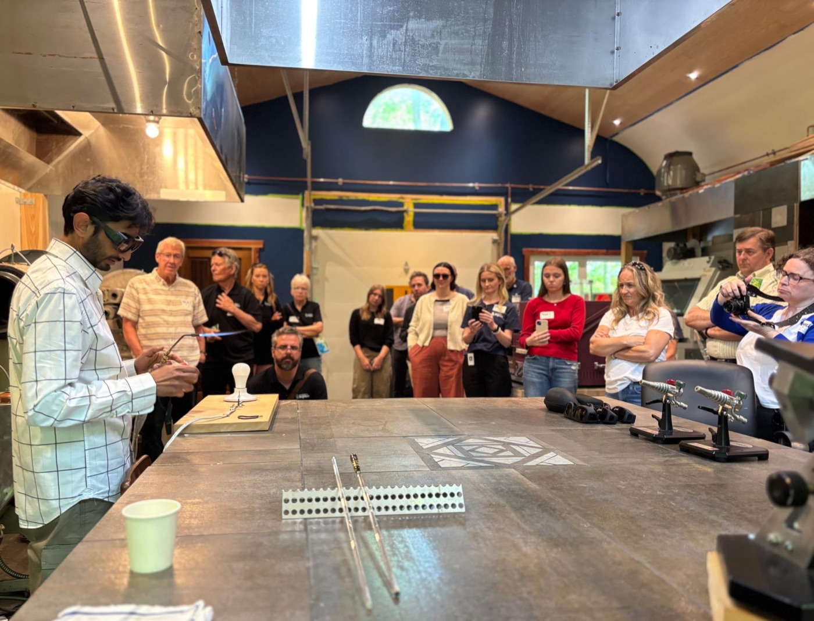

Booked through Bay of Quinte Tourism
Classes are ongoing and taught directly by Keshav. Experiences are something else: curated visits booked through Bay of Quinte Tourism's experiential tourism program, the same way you'd book time with a local beekeeper or a small-batch cidery. WAGS is one of their signature experiences. You book and pay on their site, they send you here.

The Group Experience
The studio's first experience under the Bay of Quinte program. A guided walk through the woods, a live demo at the bench torch, and time to see finished work up close.
Book through Bay of Quinte TourismTwo ways to visit the studio
If you want to learn the craft yourself, that's a class, see the Classes page.
If you want a guided, one-time visit, arranged and paid for through the tourism board, that's an experience. Bay of Quinte Tourism handles the booking and the slot; we handle what happens once you're through the trees.
Find us off the tourism trail too
Look for the White Ash booth every late September, with demos and finished pieces on hand. No booking needed, just show up.
Want to bring a group outside the tourism program
Reach out directly with your dates and group size and we'll see what we can arrange.
Get in touch